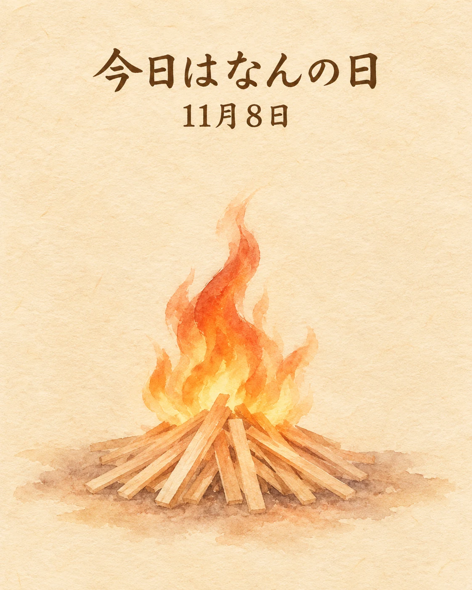

11月8日は、伏見稲荷大社の「火焚祭（ひたきさい）」です🔥
秋の収穫を終え、五穀の実りをはじめ、さまざまな恵みをもたらす稲荷大神に感謝する神事。毎年11月8日に行われ、2026年もこの日に予定されています。
本殿での祭典に続き、神苑の祭場では、全国から奉納された火焚串を焚き上げ、厄を祓い、福を願います。
ごはんにも、日本酒にもつながる米の恵み。収穫への感謝を伝える京都の行事にふれると、日々の一皿や一杯を、少し丁寧に味わいたくなりますね。
季節の味わいとともに、心ほどけるひとときをお過ごしください✨
収穫への感謝と、和食につながる米の恵み
伏見稲荷大社の公式案内では、火焚祭は毎年11月8日13時から。京都市公式・京都観光Naviの2026年行事一覧でも、11月8日（日）13時からと案内されています。秋の実りへの感謝を受け継ぐ京都文化を、和食や日本酒を支える米の恵みと重ねて紹介します。
本記事は第三者の伝統行事の紹介です。当店主催の催し、当店の参加、当日の料理・酒・在庫・営業を案内するものではありません。11月8日の当店営業は、店主確定カレンダーの「2日前までに予約がある場合に営業」の条件によります。
出典：伏見稲荷大社「祭礼と行事・11月」（火焚祭の由来・日付）、京都市公式・京都観光Navi「2026年京都市内のお火焚き祭 一覧」（2026年11月8日の案内）（2026年11月8日確認）。行事の開催状況や変更は主催者の最新案内をご確認ください。